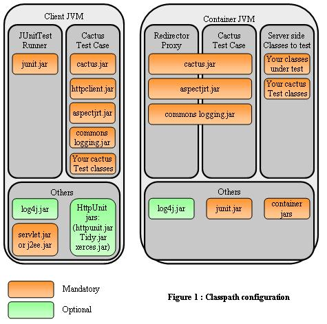

|
|
| Apache > Jakarta > Cactus > Running Tests > Manual | Docs for: v1.7.2 | v1.7 Last update: March 26 2006 |
|
Setting up Cactus Classpaths
You must understand that your Cactus tests are started by a JUnit
Test Runner (in the client JVM) and that the Cactus TestCase that you
have extended will connect to the Cactus Redirector (in the server
JVM), where your Please also check the TestRunner Howto tutorial which explains all the different ways to start a JUnit Test Runner.
It is very important that you understand what files you need
to put in the client and server classpaths, as 99% of Cactus
errors come from an incorrect classpath !

Client side classpathThe Cactus tests are started by running a JUnit Test Runner (For explanations on how JUnit works see the JUnit web site). As pictured in figure 1, you need to have the following jars and classes in your client side classpath:
If you have the habit of using class variables for the classes
to test (as opposed to declaring them within the
testXXX() method), you'll also need to put your classes
under test in the client side classpath.
In addition to the above mentioned jars and classes, you may have
to put the
If you are using Log4J as the logging framework, you will also
need to put a
log4j.properties Log4j configuration
file in your client side classpath (See the
Config Howto tutorial).
Server side classpathThe server side part is a webapp. It can be packaged as a .war file or as expanded war. It should have the following structure, which will ensure that the classpath is correct:
If you have several webapps that use cactus you can put all Cactus
jars in a place loaded by your container System classloader (provided
your container correctly sets the Context classloader). The location
is container-dependent; for example for Tomcat 4.x, you can put the
jars in
TOMCAT_HOME/common/lib.
If you are using Log4J as the logging framework, you will also
need to put a
log4j.properties Log4j configuration
file in your server side classpath (usually in
WEB-INF/classes).
|